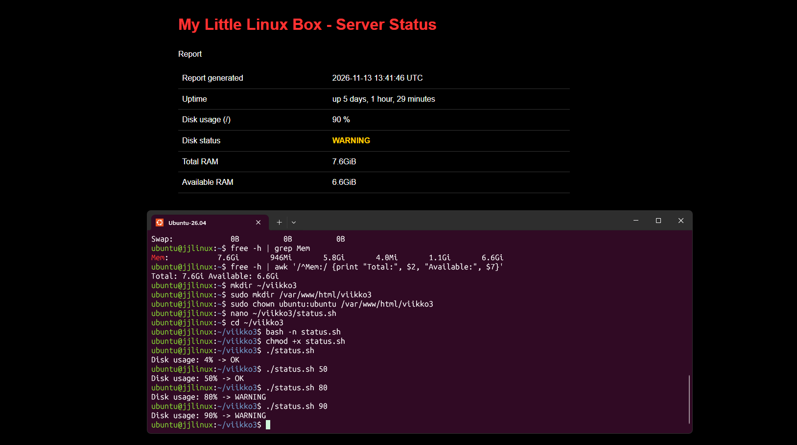
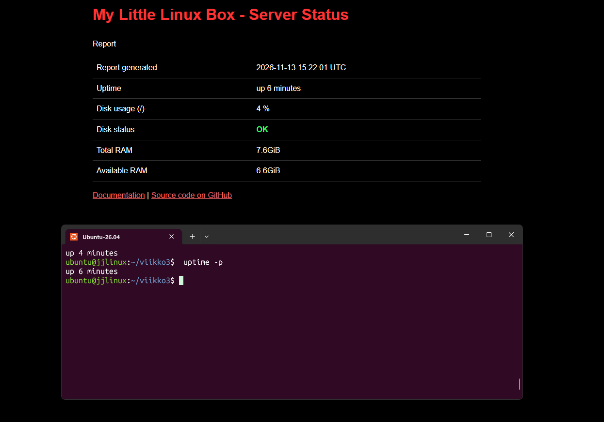

Back to status report | Code on GitHub
date "+%Y-%m-%d %H:%M:%S %Z"
-> Shows the current date and time as year-month-day-hours-minutes-seconds-timezone
uptime -p
-> the -p stands for pretty so it just writes it in a more readable form and uptime shows how long the server has been active
df / | awk 'NR==2 {print $5}' | tr -d '%'
-> df shows disk info and awk picks the usage % from it and tr removes the % sign so the if statement can compare it to 80. Pipes pass output from one command to the next one.
Script: Script collects time,uptime,disc usage and ram, saves the variables and writes them to the html folder
Disk space status: Script is run on bash and uses a function with a if statement and pipes to compare the data to 80, that determines what to show on the html. Below 80 OK 80 or more WARNING
Schedule: Uses cron and runs the script every minute, cron is enabled so it runs auto after reboot
Syntax check: bash -n status.sh gave no errors.
Disk space status tests (test value given as an argument, e.g. ./status.sh 90):

After testing I ran ./status.sh without an argument to restore the real value (4 %).
Automatic updates: 15:34:01 and 15:35:01.
Reboot test: After sudo reboot the page opened again,
the report was generated at 15:22:01 UTC with uptime "up 6 minutes",
and the updates continued every minute.

cron doesnt know what folder you are in so it needs the entire path to the script and that cron tries to email the scripts output every time it runs the script so every minute. Had to use > /dev/null 2>&1 to get rid of them